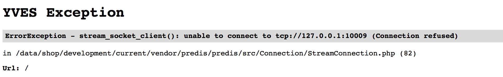
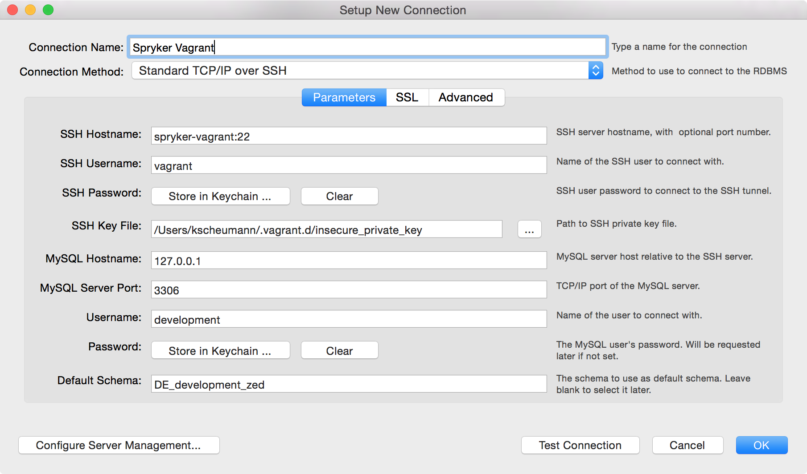

Troubleshooting
Used to be: http://spryker.github.io/getting-started/installation/troubleshooting/
Click on an issue to see how to Troubleshoot
If you get the error below while running ./setup, on the Setup Zed step:
Zed Exception: RuntimeException - psql: FATAL: Peer authentication failed for user "postgres"then open the PostgreSQL configuration file :
sudo vim /etc/postgresql/9.4/main/pg_hba.confand make sure that the first line contains the following input:
TYPE DATABASE USER ADDRESS METHOD
local all postgres trustIf you get an error on downloading debian91.box image file, then go to https://github.com/spryker/devvm/releases/download/ci-91/spryker-devvm.box and download it, then run the following command:
vagrant box add /path/to/downloaded/image/debian83.box --name debian83
vagrant upIf you get the following error :
NFS is reporting that your exports file is invalid. Vagrant does
this check before making any changes to the file. Please correct
the issues below and execute "vagrant reload":
exports:3: path contains non-directory or non-existent components: /devvm/pillar
exports:3: no usable directories in export entry
exports:3: using fallback (marked offline): /
exports:4: path contains non-directory or non-existent components: /devvm/saltstack
exports:4: no usable directories in export entry
exports:4: using fallback (marked offline): /To fix it please run the following commands:
sudo rm /etc/exports
sudo touch /etc/exportsThis may happen if you have previous VMs created and not properly destroyed (or even if you share the computer with someone else who had other VMs).
sudo sed -i .bak '/VAGRANT-BEGIN/,/VAGRANT-END/d' /etc/exports
Reinitialize VM
vagrant halt
vagrant up --provision
# or
vagrant destroy
vagrant up[09:02:42] Error: Error: ENOTEMPTY, directory not empty
'/data/shop/development/current/static/public/Yves/images/icons' at Error (native)You get this error inside the development VM, when running vendor/bin/console or npm commands. This is caused by .nfs files inside the source folders. Make sure you have the latest DevVM installed! Ngnix open_file_cache has to be disabled:
root@spryker-vagrant:~# grep -r open_file_cache /etc/nginx/
/etc/nginx/nginx.conf: open_file_cache off;To get the latest saltstack for your vm and reconfigure nginx do:
# on your host
cd vendor/spryker/saltstack (or where your saltstack repository is on your host)
git pull
# inside the vm
sudo salt-call state.highstate whitelist=nginxIf you are running Mac OSX as a host system: disable Spotlight for your Code directory see "How to disable spotlight index for specific folder in Mac OS X".
To remove stale .nfs files execute this either on your host or inside the vm:
find . -name .nfs\* -exec rm {} \;[Elastica\Exception\Connection\HttpException]
Couldn't connect to host, Elasticsearch down?Restart Elasticsearch:
# find out which elasticsearch you are using:
grep -r ELASTICA_PARAMETER__PORT /data/shop/development/current/config/Shared
# if you have port 10005
sudo -i service elasticsearch-development restart
# an older VM used port 9200
sudo -i service elasticsearch restartDo you have more than one Elasticsearch instances running?
sudo -i service elasticsearch status
sudo -i service elasticsearch-development status
sudo -i service elasticsearch-testing status
# stop some (see above how to figure out which one)
sudo -i service elasticsearch... stop
# and disable them
sudo -i update-rc.d elasticsearch... disableIs your project using RabbitMQ (for store replication)? In case not, you can disable it to free up memory:
# shutdown RabbitMQ
sudo /etc/init.d/rabbitmq-server stop
# disable the service for later startups
sudo -i update-rc.d rabbitmq-server disableThis exception is caused by a corrupted Redis AOF file and returns the following error message:

It also logs the following error (you can find the logs in /data/logs/development/redis/...):
# Bad file format reading the append only file: make a backup of your AOF file,
then use ./redis-check-aof --fix <filename>To fix this exception:
Run :
sudo redis-check-aof --fix /data/shop/development/shared/redis/appendonly.aofYou should get :
Successfully truncated AOFStart the Redis server by running:
sudo -i
service redis-server-development startMake sure redis can write its log files under: /data/logs/development/redis/
sudo chown redis:redis /data/logs/development/redis/ -RIf you encounter error messages like:
perl: warning: Setting locale failed.
perl: warning: Please check that your locale settings:
LANGUAGE = (unset),
LC_ALL = (unset),
LC_CTYPE = "de_DE.UTF-8",
LANG = "C"
are supported and installed on your system.
perl: warning: Falling back to the standard locale ("C").
perl: warning: Setting locale failed.
perl: warning: Please check that your locale settings:
LANGUAGE = (unset),
LC_ALL = (unset),
LC_CTYPE = "de_DE.UTF-8",
LANG = "C"
are supported and installed on your system.
perl: warning: Falling back to the standard locale ("C").Go to iterm2’s Preferences -> Profiles -> Terminal and disable Set locale variables automatically.
Configure connection Method TCP/IP over SSH to avoid Port Clashing with Host System. For current Connection Values have a look at config/Shared/config_default-development_DE.php. Use $HOME/.vagrant.d/insecure_private_key as an SSH Key File. MySQL

In case the connection does not succeed, please run the following command :
CREATE USER 'root'@'%' IDENTIFIED BY ''; # no password will be set
GRANT ALL PRIVILEGES ON * . * TO 'root'@'%';
FLUSH PRIVILEGES;This command creates a new root user with full permissions.
You can open Jenkins on port 10007 and watch your scripts running: http://zed.de.demoshop.local:10007/ (URL works for standard VM, you may use a different host name).
First run vagrant up --debug to analyze the cause.
Mac OS
If it complaints about wrong curl version you can try sudo rm -rf /opt/vagrant/embedded/bin/curl. This will solve the issue for new Mac OS.
Failed to decode response: zlib_decode(): data error
If you see this error during composer install or composer update you need to change your composer config. Run composer config -ge in your terminal and replace the content with this one
{
"repositories": {
"packagist": { "url": "https://packagist.org", "type": "composer" }
}
}